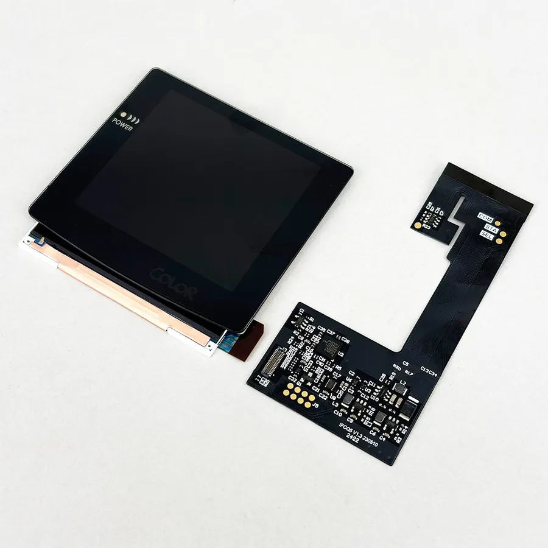
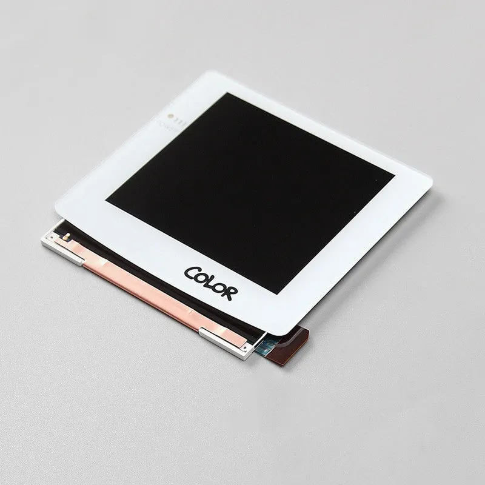
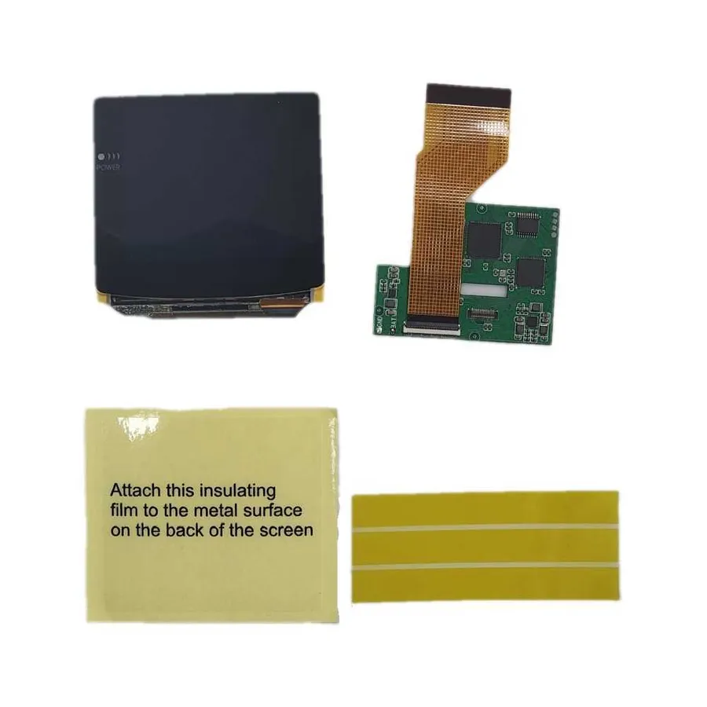
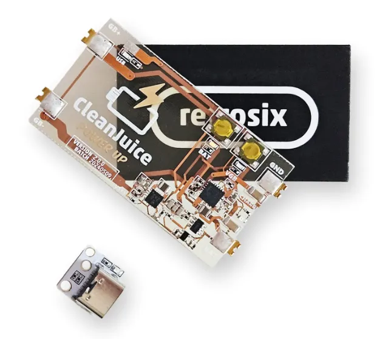
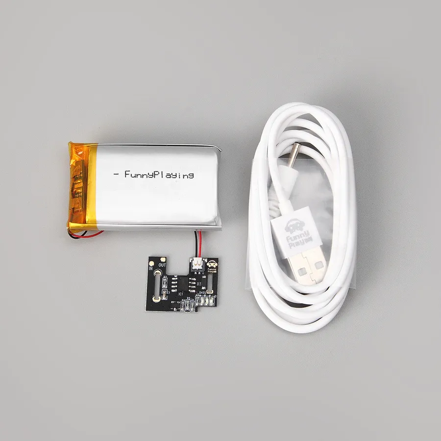
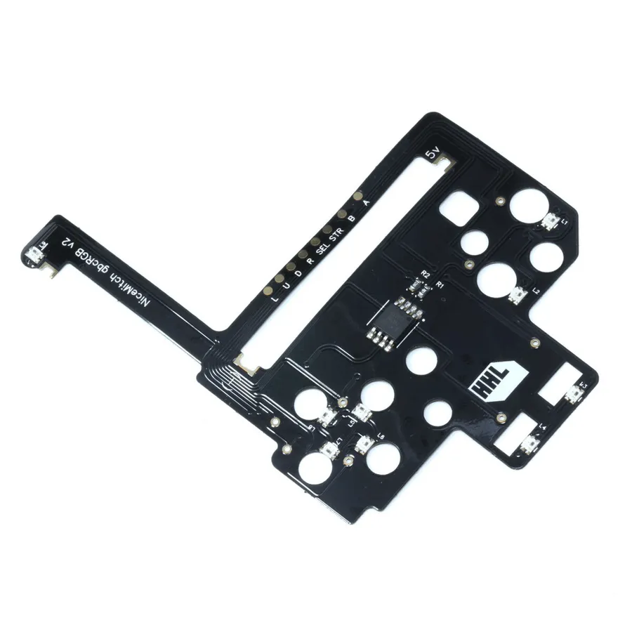
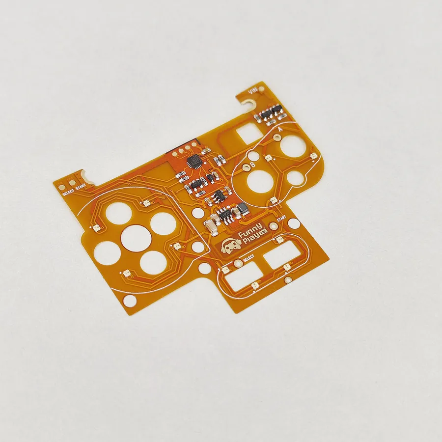
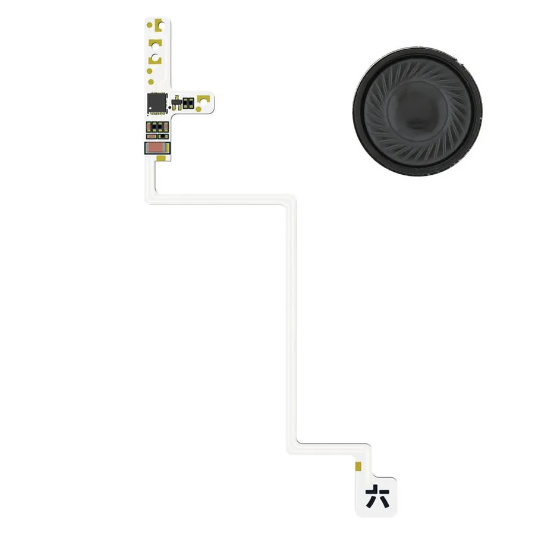
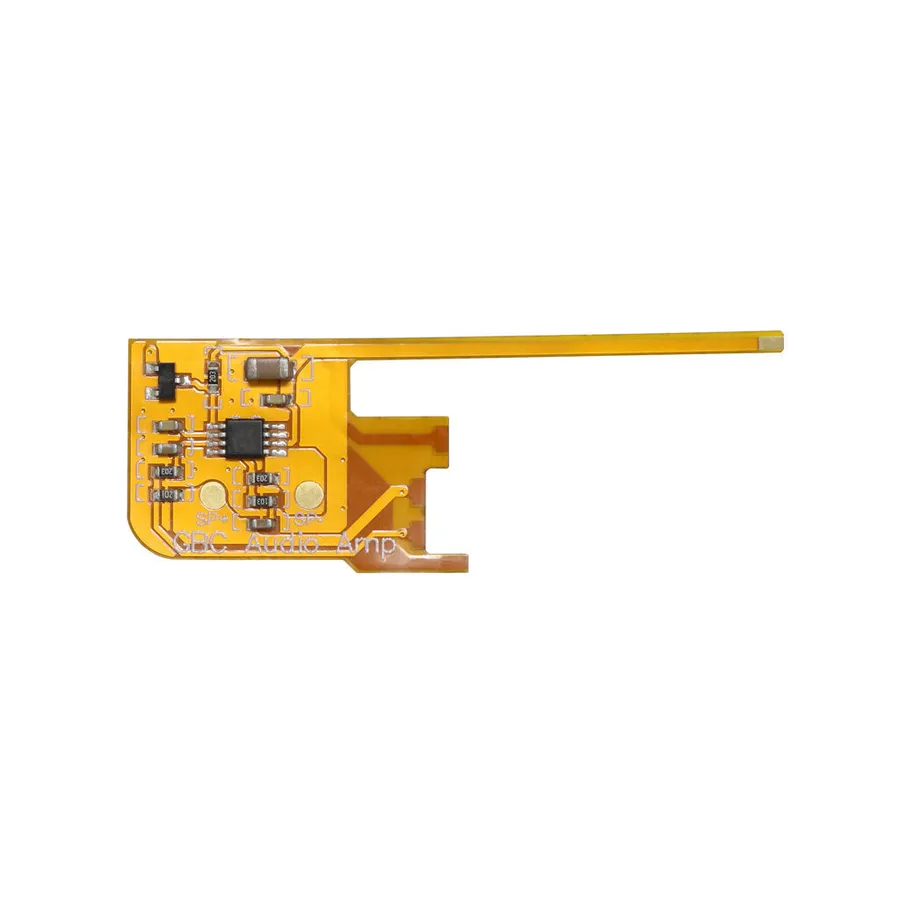

Home ›
Wiki ›
Game Boy Color
The Game Boy Color (1998) remains one of the most popular handheld modding platforms. Its original reflective screen is perfect for an IPS or AMOLED replacement, and its compact electronics accommodate USB-C batteries, clean regulators, RGB LED kits and audio amplifiers. Here are the go-to mods, sorted by category, with difficulty, soldering and prerequisites.
📺 Display ⚡ Power & Performance ✨ Lighting & Audio 🔘 Buttons
The most transformative mod: replacing the original reflective panel with a backlit IPS or AMOLED screen. Most kits require an appropriate shell (laminated/IPS-ready) or trimming, plus stabilized power (see CleanPower under Power).
Popular

© FunnyPlaying FunnyPlaying
RetroPixel IPS LCD Kit
FunnyPlaying's benchmark IPS kit for the GBC, with pixel-perfect rendering and brightness control.
Enlarged display area Adjustable brightness Scanline / pixel-effect modes Customizable backlit logo
Type IPS Q5
OSD Yes ⚠ Prerequisites : IPS-ready shell or trimming, CleanPower recommended
Strengths Sharp, bright image Pixel effects and palettes Complete FunnyPlaying ecosystem (shells, LEDs) Trade-offs Shell trimming required unless using an IPS-ready shell CleanPower recommended One wire to solder for max brightness Sources : FunnyPlaying — GBC Retro Pixel IPS LCD Kit · Handheld Legend — GBC Retro Pixel Q5 IPS · Handheld Legend — IPS LCD Kit docs
Laminated ⚑ under review

© FunnyPlaying FunnyPlaying
IPS Laminated Q5 V2.0
The go-to choice for a sharp image and a larger-than-original screen, in laminated form.
Customizable backlit logo Pixel modes (scanlines) Excellent viewing angles Dust-free laminated glass
Type Laminated IPS Q5
OSD Yes ⚠ Prerequisites : Laminated shell recommended, CleanPower recommended
Strengths Superior contrast and sharpness No trapped dust Factory look Trade-offs Pricier than the non-laminated version Laminated shell recommended CleanPower recommended Sources : FunnyPlaying — GBC Retro Pixel IPS LCD 2.0 Laminated · Handheld Legend — GBC Retro Pixel 2.0 Q5 IPS laminé
OLED ⚑ under review

© Handheld Legend Hispeedido
AMOLED Laminated Kit
The pinnacle of GBC displays. Deep blacks and vibrant colors only OLED can deliver.
Laminated AMOLED panel Infinite contrast Touch control and full OSD menu Full 16:1 scaling ~400 nits peak brightness
Type Laminated AMOLED
OSD Yes (touch)
Brightness ~400 nits
Scaling 16:1 ⚠ Prerequisites : Laminated shell required, CleanPower recommended
Strengths Absolute blacks and vibrant colors Very bright (~400 nits) Handy touch control Trade-offs Only compatible with a laminated shell (Hispeedido/FunnyPlaying) Pricier CleanPower recommended Sources : Handheld Legend — GBC AMOLED laminé Hispeedido
⚑ under review
📷
Hispeedido
IPS Drop-in 2.45" (OSD)
Drop-in IPS kit with multiple display modes and an OSD menu, installed with no shell trimming.
Multiple display modes No-trim installation Full OSD menu
Type Drop-in IPS
Size 2.45"
OSD Yes ⚠ Prerequisites : CleanPower recommended
Strengths No shell trimming Rich OSD Good value for money Trade-offs Display area not enlarged CleanPower recommended
⚑ under review
📷
Cloud Game Store
TFT LCD Backlight Kit
A no-trim drop-in solution, ideal for keeping your original shell.
100% no-trim installation Original size preserved Low power draw
Type Backlit TFT LCD Strengths Original shell kept Energy-efficient Beginner-friendly install Trade-offs Lower image quality than recent IPS panels Variable availability
Ditch the AA batteries for a rechargeable USB-C or Qi Li-Po battery, stabilize power for an IPS/AMOLED screen, or overclock the console.
⚑ under review

© Handheld Legend RetroSix
CleanJuice Air
Replace your batteries with a Li-Po battery rechargeable via USB-C or wirelessly (Qi).
USB-C charging Wireless (Qi) compatible Designed and tested in the UK
Charging USB-C + Qi wireless
Power 6.3W ⚠ Prerequisites : RetroSix Prestige shell recommended
Strengths Wired and wireless charging No more batteries to buy Clean install with a Prestige shell Trade-offs Soldering required RetroSix Prestige shell recommended (invasive modification on an OEM shell) Sources : Handheld Legend — CleanJuice Air GBC
⚑ under review

© FunnyPlaying FunnyPlaying
GBC Battery Charging Mod
FunnyPlaying's USB-C Li-Po charging module, compact and easy to install.
USB-C charging Compact and discreet Easy install
Charging USB-C Strengths Affordable USB-C solution Small footprint FunnyPlaying ecosystem Trade-offs Soldering required Battery sometimes sold separately Sources : FunnyPlaying — GBC Battery Charging Mod
Essential ⚑ under review
© RetroSix RetroSix
CleanPower Regulator GBC
Voltage regulator to stabilize the GBC's power with modern IPS/AMOLED mods.
Stable power Prevents screen flickering Essential with a backlit screen
Output Stable 5V Strengths Eliminates dropouts and flicker Clean voltage Low price
⚑ under review
📷
FroggoCustoms
Frogulator DC Regulator
A reliable alternative to CleanPower for stabilizing the power of the GBC and the Pocket.
Clean, stable 5V power Compatible with GBC & Pocket Compact
Output 5V DC
Compatibility GBC & Pocket Strengths Reliable alternative to CleanPower Versatile (GBC + Pocket) Compact form factor Sources : FroggoCustoms — boutique
Speed ⚑ under review
📷
Division 6
GBAccelerator (OC)
Switch to x1.5 or x2 speed at the press of a button. Ideal for RPGs and Pokémon.
4 speed modes Clean install Compatible with most IPS kits
Modes x1 / x1.5 / x1.75 / x2 Strengths Speeds up slow games Reversible Button control Trade-offs Soldering required Some games may glitch when overclocked
Light up the buttons in RGB and improve the often-weak stock sound with a modern amp or a full audio-circuit replacement.
RGB ⚑ under review

© Handheld Legend Handheld Legend
RetroGlow GBC
The benchmark RGB LED kit. Light up your buttons with millions of colors.
Customizable per-button color Hue / saturation / brightness adjustment Select + D-Pad control Low power draw (18–25 mA by default)
Type RGB LED flex
Power draw 18–25 mA (50 mA max) ⚠ Prerequisites : Transparent buttons recommended
Strengths Spectacular visual effect Highly customizable Doesn't interfere with IPS controls Trade-offs Fine soldering (solder-in-place) Transparent buttons recommended Not recommended on BoxyPixel shells Sources : Handheld Legend — RetroGlow GBC · HHL Wiki — RetroGlow GBC Install Guide
RGB ⚑ under review
© NatalieTheNerd NatalieTheNerd
ARC GBC (RGB LEDs)
RGB board with per-zone control (D-pad, A/B, Start/Select) and breathing & windmill modes.
Per-zone color control (D-pad, A/B, Start/Select) Breathing & windmill modes 11 colors available
Type RGB LED
Colors 11
Zones D-pad / A-B / Start-Select Strengths Per-zone control Animation modes Designed by a respected modder Sources : NatalieTheNerd — ARC GBC RGB · NatalieTheNerd — ARC GBC Install Guide
RGB ⚑ under review

© FunnyPlaying FunnyPlaying
GBC Button LED Kit
FunnyPlaying LED kit to light up your GBC's buttons in style.
Easy install Button lighting Compatible with FunnyPlaying IPS kits
Type Button LEDs Strengths Good value for money Integration with the FunnyPlaying ecosystem Trade-offs More limited customization than an advanced RGB kit Soldering required Sources : FunnyPlaying — GBC Button LED Kit
⚑ under review

© RetroSix RetroSix
CleanAmp Pro
A class-D amplifier for powerful, crystal-clear sound.
Wire-free installation Noticeably louder sound (class-D) Background-noise filtering Replaces the original amp and speaker
Type Class-D amp Strengths Much higher volume than stock Clean sound Wire-free install Trade-offs Basic soldering required Speaker sold separately Sources : RetroSix Wiki — GBC CleanAmp Install Guide
⚑ under review
© NatalieTheNerd NatalieTheNerd
Bucket Amp GBC
Fully replaces the original sound circuit for a radically improved audio.
Full sound-circuit replacement (MGB AMP) Superior audio quality Based on the Bucket Mouse design (MGBC)
Type Audio-circuit replacement
Compatibility EM2/3/4 boards (not CPU 05/06) ⚠ Prerequisites : Compatible motherboard (EM2/3/4)
Strengths A complete sound overhaul, not just a boost Superior audio quality Trade-offs Micro-soldering required Incompatible with CPU 05 and CPU 06 boards (needs EM2/3/4) Sources : NatalieTheNerd — Bucket Amp GBC · GitHub — BucketAmpGBC
⚑ under review

© Handheld Legend Handheld Legend
Wire Free Audio Amplifier GBC
Wire-free amplifier to install directly on the GBC's motherboard.
Wire-free installation Significantly improved volume Compact and discreet
Type Wire-free audio amp Strengths Direct wire-free install Notable volume gain Small footprint Sources : Handheld Legend — GBC Wire Free Audio Amplifier
General sources : Game Boy Modding Wiki — Backlight Mods · Handheld Legend — IPS LCD Kit (docs)